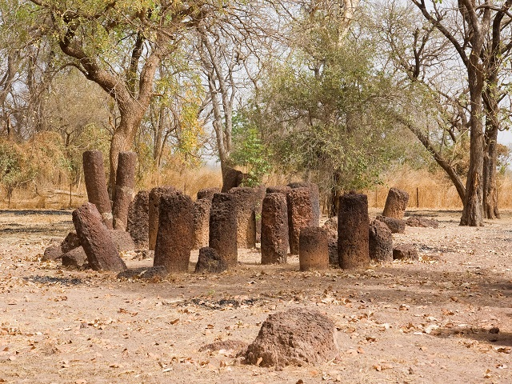

My name is Malang Gitteh and I am the founder and CEO of
Albaraka Tours, a fully licensed and insured ground tour
operator, specialising in escorted tours for English, German and
Dutch speaking visitors to Gambia, Senegal and Guinea Bissau.
Safaris, Day Trips, Cruises, Tours & Excursions

I am a Gambian citizen and was born in Sanyang in 1980 where
I attended primary and junior school before finishing my education
at 18 at the Brikama Secondary School where I gained my PSLCE certificate with
distinction in Geography, History, English and German.
My headmaster insisted that I found a job in the tourism industry and I
was lucky enough to began work immediately as a driver and tour guide.
I now have 20 years experience in the industry, am married and have 3 children.
In 2007 I founded Abaraka Tours and am now based in the Senegambia tourist area
from where I operate two vehicles and employ a small but highly motivated team of
guides to deliver high quality, enjoyable and informative tours, day trips and
excursions for up to 16 people at a time.
My mission is to create an internationally recognised tour company in the
Ganbia providing first class customer service and would be second to none.
A company that will bring jobs, spur investment and add true value to our local
communities and society.
I fully understand the importance of tourism to our national economy and I
believe that there is a lot that can be done to raise standards and set new
goals for others to follow. Please feel free to contact me on any matter using
the form below? The Stone Circle IN the Gambia
Brief synthesis
The inscribed site corresponds to four large groups of megalithic circles located in
the extreme western part of West Africa, between the River Gambia and the River
Senegal. These sites, Wassu, and Kerbatch in Gambia, and Wanar and Sine Ngayene
in Senegal, represent an extraordinary concentration of more than 1,000 stone
circles and related tumuli spread over a territory of 100 km wide and 350 km in
length, along the River Gambia. Together, the four groups comprise 93 circles and
associated sites, some of which have been excavated, some of which have revealed
archaeological material and human burials, from pottery to iron instruments and
ornamentation dating between the 1 st and 2nd millennia to our era. These four
megalithic sites are the most dense concentration in the zone and have Outstanding
Universal Value, representing a traditional monumental megalithic construction
spread out over a vast area, with more than 1,000 stone circles scattered along
one of the major rivers of Africa.
The Sine Ngayene complex (Senegal) is the largest site in the area. It consists of
52 circles of standing stones, including one double circle. In all, there are
1102 carved stones on the site. Around 1km to the east, (outside the inscribed
property) is the quarry from which the monoliths were extracted and where the sources
of around 150 stones can be traced. The site was excavated around 1970, and more recently
by Bocoum and Holl. The work established that the single burials appeared to precede in
time the multiple burials associated with the stone circles. The Wanar complex (Senegal)
consists of 21 circles including one double circle. The site contains 9 ‘lyre’ stones
or bifed stones, sometimes with a cross piece strung between the two halves. The Wassu
complex (Guinea) consists of 11 circles and their associated frontal stones. This site
has the highest stones of the area. The most recent excavations conducted on these
megalithic circles date to the Anglo-Gambian campaign led by Evans and Ozanne in
1964 and 1965. The finds of burials enabled the dating of the monuments between 927
and 1305 AD. The Kerbatch complex consists of 9 circles, including a double circle.
The site possesses a ‘bifid’ stone, the only known one in the area.
The stones forming the circles were extracted from nearby laterite quarries
using iron tools and skilfully shaped into almost identical pillars, either
cylindrical or polygonal, on average around 2 m in height and weighing up to
7 tons. Each circle contains between eight to fourteen standing stones having a
diameter of four to six metres. The four megalithic sites inscribed bear witness
to a prosperous and highly organized society with traditions of stone circle
constructions, associated with burials, and persisting in certain areas over
more than a millennium.
Criterion (i): Individual stones finely carved bear witness
to an exact and experienced technique and contribute to the organized and imposing
size of the stone circle groups.
Criterion (iii): The circles of stones proposed for inscription
represent the totality of the megalithic area in which the presence of such a large
number of circles is a unique manifestation of construction and funerary practices
which persisted for over a millennium across a large geographical area and reflecting
a sophisticated and productive society.
Integrity
The integrity of the four components of the site can only be evaluated as part of a
much wider unified cultural complex. The complexes conserve their integrity in terms
of spatial associations of the component circles, individual megaliths and tumuli.
The spiritual beliefs associated to the stones by local communities help to protect
their integrity.
Authenticity
The stone circles stand in a farmed landscape and there have been few interventions.
A very small number of stones have been removed. Some burial sites have been excavated
and subsequently back-filled. These disturbances remain minimal. The overall
authenticity of the four sites is intact.
Protection and management requirements
In Gambia, management of the of the two sites (Wassu and Kerbath)
fall under the responsibility of the National Centre for Arts and Culture
(NCAC) in accordance with the law promulgated by the National Assembly
(NCAC Law of 1989, amended in 2003). The NCAC is the dismantled technical
section of the Ministry of Tourism and Culture. The daily management of the sites
is under the responsibility of the Directorate for Cultural Heritage of the NCAC that
employs, on a permanent basis, the caretakers and maintenance staff. Both sites have
a management plan prepared during the nomination process with participatory cooperation
of local communities and their representatives. The two sites are fenced and four
thatched round buildings, built in the manner of traditional houses, serve as a
museum, visitor reception facilities and lodgings for the caretaker. The NCAC has
support from local management committees that ensure the interests of the community
in the sites. Funding is principally provided by Government revenue from visitor
entrance fees and other subventions.
In Senegal,
the two sites enjoy legal protection: Law No.71-12 of 25 January 1971,
regulating the regime for historical sites and monuments and excavations and finds/
Decree 73-746 of 8 August 1973 promulgating the law. The Directorate of Cultural
Heritage of the Ministry is responsible for the management of the sites. The communities
also have extended powers through the Law on decentralization facilitating their
involvement in the management of the sites. The funding sources are: the State budget,
local communities and donor subventions. These funds have enabled the fencing of the two
sites, the construction of a hall (Wanar) and a welcome space (Sine Ngayene), visitor
sanitary facilities as well as the funding of two full-time caretakers. Good signposting
was installed to access the two sites as well as an interpretation centre at Sine Ngayene.
In the long-term, improvement to the access paths is foreseen in the presentation
framework.
The management plan was prepared in consultation with the Senegalese and Gambian
stakeholders meeting in Wassu in Gambia and Ngayene in Senegal in December 2004.
The long-term objective of this action plan is to render the site visible,
accessible and ensure economic benefits for the local communities. Beyond
the conservation and enhancement of the sites, the management envisages
conducting in-depth research and enable the sites to be better adapted to
the development objectives at the national level.